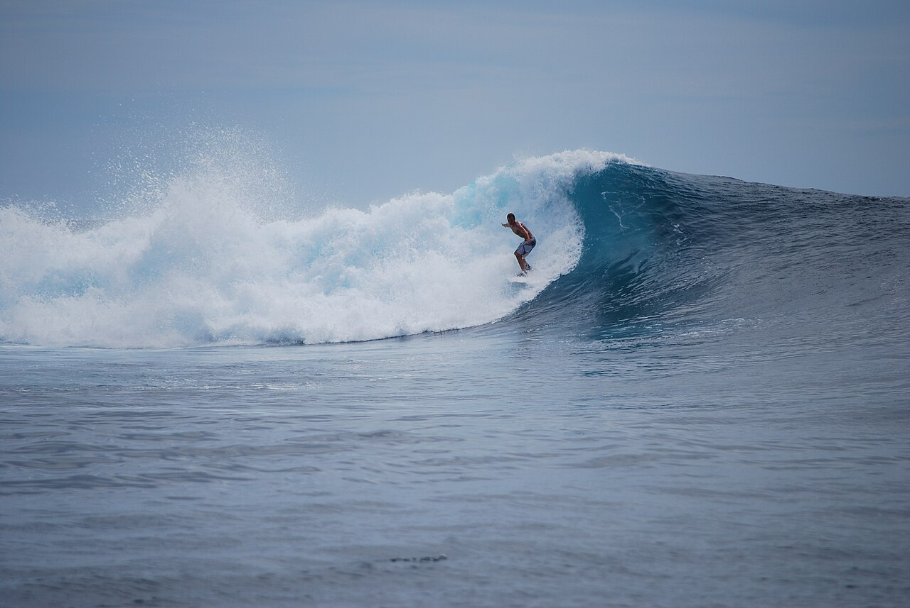

Lance's Right — Mentawai
Indonésie · surf

L'archipel aux vagues parfaites : des tubes de récif de classe mondiale accessibles en bateau (boat trip).
- Lieu
- Indonésie
- Niveau
- Expert
- Activités
- surf
- Type d'eau
- Mer / océan
- Coordonnées
- -2.06, 99.57 (position approximative du secteur)
Dangers à connaître
- Récifs tranchants.
- Accès en bateau.
Le conseil d'Ocean Buddy
Paradis du surf en boat trip ; récifs peu profonds, expérience requise.
Ouvrir dans Ocean Buddy Télécharger sur l'App Store
Source : Description historique Ocean Buddy · vérification externe en attente.